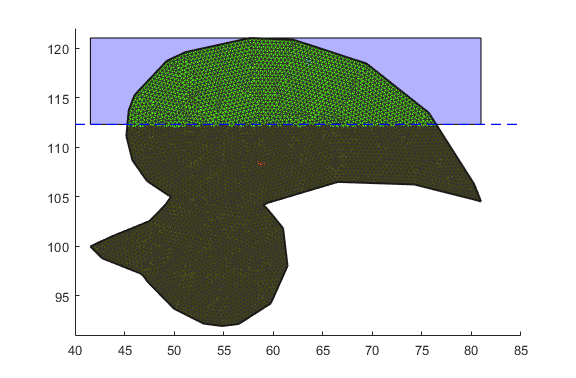
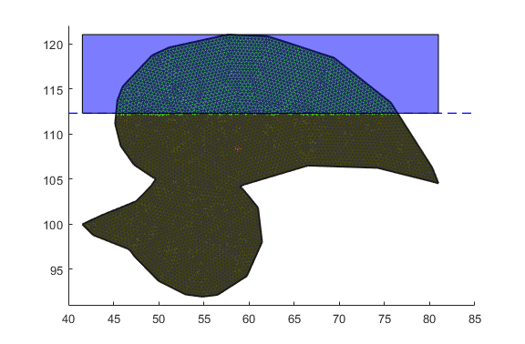
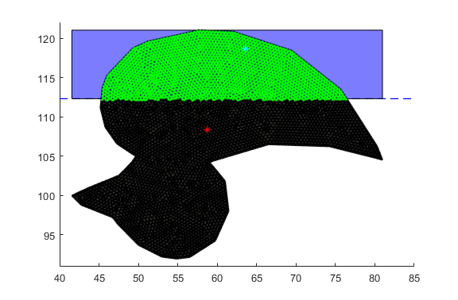

Contents
- Question 1
- Question 2 & Question 3
- Question 4 & Question 5
- Clear Windows & Vars
- Basic Constants
- Preallocating Matricies
- Read Polyline Data
- Triangulation
- Calculating Water Line
- Plot Duck Waterline
- Waterbox Calcualtion
- Plot Waterbox
- Solving for the Duck Area Underwater
- Calculate the center and the area of the shape
- Solving for the Duck Area
- Solving for the Wet Duck Area
- Solve for the Center of the Duck
- Solve for the Wet Center of the Duck
- Solving for Mass of Duck
- Solving for the Force of Gravity (Vector)
- Solving for the Force of Bouyancy (Vector)
- Plot Duck Center of Mass
- Print Final Values of Total Duck
%Daniel Shor %Modeling Assignment 1 %4745094
Question 1
Will the duck float in the illustrated configuration?
No. In order for an item to float, the duck must have a center of mass and a center of bouyancy that are equal and equivilent vectors. In this case, the center of boyancy and the center of mass are not in line. This means the duck will not float in the current configuration.
Question 2 & Question 3
Can we change density or emerged height to show that 2d shape will float in upright configuration. What are the new densities and heights? Otherwise, why does it not float as intended?
No. In order for an item to float, the duck must have a center of mass and a center of bouyancy that are equal and equivilent vectors. As shown by this model, the duck's center of mass and center of boyancy aren't aligned. The duck will always tip.
Question 4 & Question 5
Which Shape moddeling technique was used? Why this shape modelling technique?
For this assignment, Delauney Triangulation was used to create a shape approximation. This was refined via the mesh2d library refine2.m file. Triangulation is a more accurate way of approximating shapes than a cubic or circular shape simplification. After an initial assessment and discussion on how the Triduck.m file worked, I was willing to explore how TriDuck could be used to create my own implementation. I then wrote my own version of the Delauey triangilation to create a simplified model already begining to understand the implementation of Triduck.m and how shape triangulation could be used. I then went back to the Triduck.m file, after a new version was provided to the class. I refined the triangles so that I could ignore the positions of intersection -- the smaller the trianges, the smaller the additional area error. I wanted to create a self referencing version of the calculation so that I could adjust the water line as desired for later implementations. To accomplish this, I use the variable "iswet" to find any values that exist below the waterline.
Clear Windows & Vars
clear clc
Basic Constants
dwater = 1; %density of water dPLA = 1.25; %density of PLA dInfill = .50; %infill density g = 9.8; %gravity
Preallocating Matricies
xic = []; yic = []; subDuck = []; ShapeCenter = [0 0]; areaduck = 0; n = 0;
Read Polyline Data
fileID = fopen('duckPolyline.txt','r'); %duckPolyline.txt testPolyline.txt testPolyline_sub.txt formatSpec = '%f %f'; sizeA = [2 Inf]; A = fscanf(fileID,formatSpec,sizeA); A=A';
Triangulation
node = A; [m,n] = size(A); edge = zeros(m,2); for i=1:m-1 edge(i,1) = i; edge(i,2) = i+1; end edge(m,1) = m; edge(m,2) = 1; %------------------------------------------- call mesh-gen. [vert,etri, ... tria,tnum] = refine2(node,edge) ; hfun = +.4 ; % uniform "target" edge-lengths [vert,etri, ... tria,tnum] = refine2(node,edge,[],[],hfun) ; %------------------------------------------- draw tria-mesh figure(1); patch('faces',tria(:,1:3),'vertices',vert, ... 'facecolor','y','FaceAlpha',.3, ... 'edgecolor',[.2,.2,.2]) ; hold on; %axis image off; axis equal; patch('faces',edge(:,1:2),'vertices',node, ... 'facecolor','y','FaceAlpha',.3, ... 'edgecolor',[.1,.1,.1], ... 'linewidth',1.5) ; drawnow; set(figure(1),'units','normalized', ... 'position',[.05,.50,.30,.35]) ;
Refine triangulation...
-------------------------------------------------------
|ITER.| |CDT1(X)| |CDT2(X)|
-------------------------------------------------------
1 38 36
10 57 183
10 57 183
Refine triangulation...
-------------------------------------------------------
|ITER.| |CDT1(X)| |CDT2(X)|
-------------------------------------------------------
10 298 36
11 301 36
20 301 3569
30 301 6235
40 301 7923
50 301 8449
51 301 8455
Calculating Water Line
This section uses the default 1/3 of duck submerged and plots the duck as under water
a = .3; %Duck height scalar %Calculating the total height of the duck by min and max of Y matrix values topduck = max(vert(:,2)); bottomduck = min(vert(:,2)); leftduck = min(vert(:,1)); rightduck = max(vert(:,1)); heightDuck = topduck - bottomduck; %Waterline waterLine = topduck-a*heightDuck;
Plot Duck Waterline
%drawing the water line and plotting the center of mass hold on line([40,85],[waterLine,waterLine],'Color','blue','LineStyle','--','linewidth',1) hold off
Waterbox Calcualtion
%This visualizes the vater that is in contact with the duck. %Create Box of Water waterboxX = [rightduck, leftduck, leftduck, rightduck]; waterboxY = [waterLine, waterLine, topduck, topduck];
Plot Waterbox
hold on patch(waterboxX,waterboxY,'b','FaceAlpha',.3) hold off
Solving for the Duck Area Underwater
delx = vert(:,1); %matrix of X coordinates dely = vert(:,2); %matrix of Y cooridnates %find out which elements are below waterline and creates and index iswet = dely < waterLine;
Calculate the center and the area of the shape
nTri = size(tria, 1); % The number of triangles nVert = size(vert,1); % The number of vertices AreaPerTriangle = zeros(nTri,1); CenterPerTriangle = zeros(nTri,2); iswetcheck = zeros(nTri,1); AreaPerTrianglewet = zeros(nTri,1); CenterPerTrianglewet = zeros(nTri,2); for i=1:nTri i1 = tria(i,1); % The index of the first vertex in the i-th triangle i2 = tria(i,2); i3 = tria(i,3); v1x = vert(i1,1); % x-cooridinate of the first vertex v1y = vert(i1,2); % y-cooridinate of the first vertex v2x = vert(i2,1); v2y = vert(i2,2); v3x = vert(i3,1); v3y = vert(i3,2); cen1 = [v1x v1y]; cen2 = [v2x v2y]; cen3 = [v3x v3y]; if (v1y < waterLine) && (v2y < waterLine) && (v3y < waterLine) % this if statement checks to see if any of the waterline values are above any of the vertexes of the triangle iswetcheck(i) = 0; else iswetcheck(i) = 1; end CenterPerTriangle(i,:) = [((v1x + v2x + v3x) / 3), ((v1y + v2y + v3y)/ 3)]; hold on plot(CenterPerTriangle(i,1),CenterPerTriangle(i,2),'black.') if (iswetcheck(i) == 1) % this if statement checks to see if any of the waterline values are above any of the vertexes of the triangle CenterPerTrianglewet(n,:) = [((v1x + v2x + v3x) / 3), ((v1y + v2y + v3y)/ 3)]; plot(CenterPerTrianglewet(n,1),CenterPerTrianglewet(n,2),'g.') n = n+1; AreaPerTrianglewet(i) = abs(iswetcheck(i)*((v1x*(v2y - v3y)) + (v2x*(v3y - v1y)) + (v3x*(v1y - v2y))) / 2); end AreaPerTriangle(i) = abs(((v1x*(v2y - v3y)) + (v2x*(v3y - v1y)) + (v3x*(v1y - v2y))) / 2); end hold off
Solving for the Duck Area
areaduck = sum(AreaPerTriangle);
Solving for the Wet Duck Area
areaduckwet = sum(AreaPerTrianglewet);
Solve for the Center of the Duck
cx = sum(AreaPerTriangle.*CenterPerTriangle(:,1))/areaduck; cy = sum(AreaPerTriangle.*CenterPerTriangle(:,2))/areaduck; ShapeCenter = [cx cy];
Solve for the Wet Center of the Duck
cxwet = sum(AreaPerTrianglewet.*CenterPerTrianglewet(:,1))/areaduck; cywet = sum(AreaPerTrianglewet.*CenterPerTrianglewet(:,2))/areaduck; ShapeCenterwet = [cx+cxwet cy+cywet];
Solving for Mass of Duck
Use M = V*d
dduck = dPLA * dInfill;
duckmass = areaduck * dduck;
duckmasswet = areaduckwet * dduck
duckforce = duckmass/1000 * g; %force = M(kg)*g(N)
duckmasswet = 127.0000
Solving for the Force of Gravity (Vector)
duckvecstart = ShapeCenter; vecy = cy + duckforce; duckvecend = [cx, vecy];
Solving for the Force of Bouyancy (Vector)
Plot Duck Center of Mass
%Show COM in Red hold on; plot(ShapeCenter(1,1),ShapeCenter(1,2),'r*'); plot(ShapeCenterwet(1,1),ShapeCenterwet(1,2),'c*'); hold off;
Print Final Values of Total Duck
disp([' Center: ' sprintf('%6.3f %6.3f',ShapeCenter(1,1), ShapeCenter(1,2))]); disp([' Area: ' sprintf('%6.3f',areaduck)]); disp([' Mass: ' sprintf('%6.3f',duckmass)]); disp([' Wet Center: ' sprintf('%6.3f %6.3f',ShapeCenterwet(1,1), ShapeCenterwet(1,2))]); disp([' Wet Area: ' sprintf('%6.3f',areaduckwet)]); disp([' Wet Mass: ' sprintf('%6.3f',duckmasswet)]);
Center: 58.729 108.373 Area: 586.635 Mass: 366.647 Wet Center: 63.511 118.613 Wet Area: 203.200 Wet Mass: 127.000